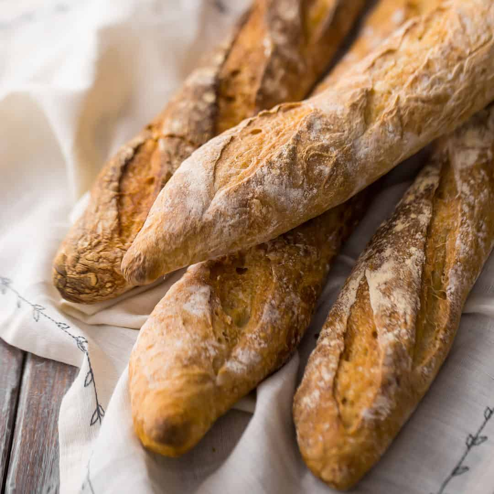

French Baguette

Description
Homemade Baguettes are the ultimate bread making experience in my opinion.
They take some time to make but are really pretty simple. The ingredient list is short but the flavor is amazing.
You are going to love to know how to make authentic French Baguettes at home; they are such an amazing bread.
Ingredients
- 1 1/2 cups + 2 tablespoons cool water,
370 grams
- 1 tablespoon honey,
25 grams
- 1 teaspoon instant yeast,
3 grams
- 3 1/2 cups all-purpose Bob's Red Mill or King Arthur Flour brand flour,
500 grams
- 2 teaspoon fine sea salt,
10 grams
Steps
- In a medium mixing bowl add the water and honey to the bowl and stir to combine.
- Add the yeast, flour, and salt to the bowl and use a wooden spoon to mix well. The dough will be thick,
just stir it as well as you can until the flour is incorporated. No need to mix a lot by hand at this point, just get it to come together.
- Cover the bowl (use a lid, beeswax wrap, or some good cling wrap) and let the dough rest for 30 minutes.
- After 30 or so minutes stretch and fold the dough. When I say “stretch and fold”, here's what you do: put your hand
between the dough and the bowl on one side and grab the dough, gently pull it up to give it a good stretch (if the
dough starts to break, stop pulling, your are just stretching the dough as far as it wants to stretch without breaking it)
and then fold it back down into the middle of the bowl. Give the bowl a quarter turn and repeat the process, working your
way around the bowl. I normally think of the bowl as a square and stretch and pull the dough 4 times, once on each side of my
square. It'll take 15 or so seconds to do this.
- Over the next 2-3 hours, every 30 to 45 minutes, do a stretch and fold with the dough. Be sure to cover the dough well
after each session. Do around 4 stretch and fold sessions total (a little more won't hurt anything).
- After you have stretched and folded the dough, cover the dough well and place it in the fridge for the next 12-18 hours.
You have some flexibility about how long the dough is in the fridge, so feel free to make the baking schedule work with your
schedule.
- Divide the dough into three even pieces. Gently press each piece of dough into a rectangular shape about 1 inch thick.
If the dough is very sticky feel free to lightly flour your surface. Cover the pressed out dough pieces with a clean dish
towel and allow to rise for 1 hour.
- After the dough has rest for an hour at room temperature, it's time to shape your loaves. Working with one piece of dough,
stretch the dough gently so that it makes a rectangle that is roughly 11 inches by 8 inches. Fold one third of the dough to the
middle of the rectangle, fold the other side of the rectangle into the middle of the dough (like you are folding a letter) and
then pinch the dough together along the seem to make a log (I have step by step photos of this in the blog post).
- Place the prepared dough log into your baguette pan. Repeat with remaining dough.
- Cover the dough in the pan with a clean dish towel and let rise for 45 minutes to 1 hour or until the dough is light and
puffy (it won't be quite doubled in size).
- While the dough is rising, preheat your oven to 500 degrees F. When you turn the oven on to preheat, add a small dish
of water to the oven. I like to use a bread pan that has about 2 inches of water in it. I put it off to one side of
the oven so that my baguette pan can fit next to it. I like to let the oven and water preheat for at least 30 minutes
so that it has time to get good and hot.
- When the bread has finished rising in the baguette pan, use a razor blade or lame to cut 3 diagonal slashes 1/2 inch
deep diagonally across each loaf OR cut one long 1/2 inch deep slash down the center of each loaf (I like the center slit personally).
Place the bread in the hot oven, being careful when you open the oven as it is hot and steamy.
Close the oven door and reduce the heat to 450 degrees F. right away.
- Let the baguettes cook until they are deep golden brown, 24-28 minutes (I like 25 minutes on the dot). They are going to be very golden!
- Remove the baguettes from the oven and allow to cool 10-15 minutes before serving warm.